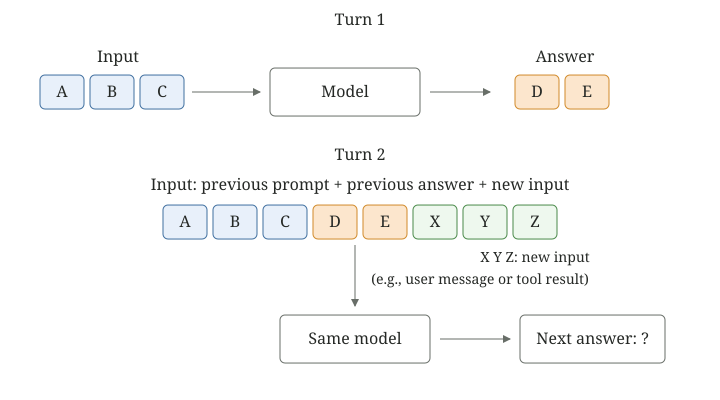
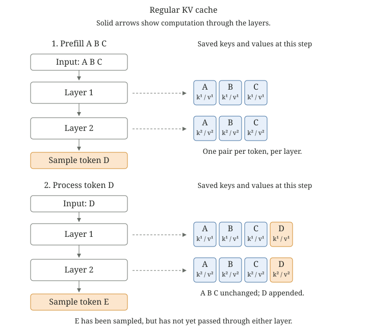
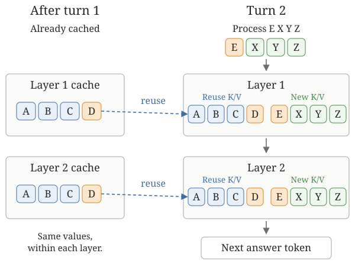
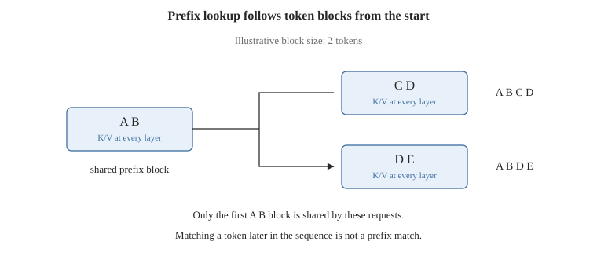

A Token-by-Token Guide to Prompt Caching
Suppose we send a model three tokens, A, B, C, and it answers with the tokens D, E. We then append X, Y, Z as new input (e.g., a user message or a tool result).

In Why KV Cache and Not QKV Cache?, we saw that, within a single answer, we do not have to reprocess tokens the model has already seen. Their keys and values have already been computed. Why should the same idea not apply to another turn?
We will use two transformer layers, with one causal attention head per layer. Each upright letter labels one token; it is not a matrix or the cache itself. We leave out chat formatting and end-of-turn tokens; in a real request, those are part of the sequence too.
Why Two Layers?
Let \(\xs_i^{(0)}\) be the embedding of the token at position \(i\), and \(\xs_i^{(r)}\) its representation after layer \(r\). As before, individual vectors are row vectors. In our simplified layer:
\[ \ks_i^{(r)}=\xs_i^{(r-1)}\W_K^{(r)},\qquad \vs_i^{(r)}=\xs_i^{(r-1)}\W_V^{(r)}. \]In layer 1, the key and value for token C come from its embedding. But layer 2 receives a representation that has already mixed information from earlier tokens. Does appending token D change that representation?
Write down exactly what each token can see. Tokens A, B, C occupy positions 1, 2, 3:
\[ \begin{aligned} \xs_1^{(1)}&=f_1(\mathrm{A}),\\ \xs_2^{(1)}&=f_1(\mathrm{A},\mathrm{B}),\\ \xs_3^{(1)}&=f_1(\mathrm{A},\mathrm{B},\mathrm{C}). \end{aligned} \]Here \(f_1\) denotes the first layer's computation for the last token shown, including attention and the feed-forward operation. Token C cannot attend to token D. The causal mask gives that future position an attention weight of zero. Appending a token therefore changes none of these three rows.
Layer 2's keys and values are projections of those unchanged rows. So they remain unchanged too. Its attention is also causal, which makes its output rows unchanged. The same argument repeats for every subsequent layer.
The keys and values for tokens A, B, C, in layers 1 and 2, are the same whether the input is A, B, C or A, B, C, D, E, X, Y, Z.1
Each layer keeps its own cache. The key/value pair for token C in layer 1 is generally different from its pair in layer 2. What stays the same across turns is each layer's own pair.
Generate D, Then E
First, pass A, B, C through both layers. This is prefill. Each layer saves three key/value pairs. The final representation at C produces the distribution from which we sample D.
Next, pass D through both layers. In layer 1, D's query attends to the saved A, B, C keys and its new D key, then combines their values. The resulting D row moves into layer 2, where the same procedure uses layer 2's own cache. We append D's pair to each cache. The final D row predicts E.

There is a small but important detail here. If generation stops immediately after sampling E, the cache contains A, B, C, D. E has not passed through the model yet. If E is subsequently processed to predict an end-of-turn token, its keys and values exist as well. We will use the first case below.
The Next Turn
Now append X, Y, Z. These can be a user's next message or a tool result following a model's tool call. Both become additional input tokens.
If the server retained the computed A, B, C, D prefix and can reuse it, only E, X, Y, Z need fresh computation. E attends to A through E. X attends to A through X. Y attends to A through Y. Z attends to all eight tokens. These suffix rows can be processed together with a causal mask; they need not run as four separate decoding steps.

KV caching stores the per-layer keys and values needed to continue computation. Prompt caching, in this setting, lets a later request reuse an already computed prefix. It adds retention and lookup around those saved tensors. It does not save an answer and return it verbatim. New tokens still attend to the cached prefix, and generating the next answer still requires decoding. The saving comes from avoiding recomputation of the prefix.
Mathematical reuse and an actual cache hit are different things. The required tensors must have been computed, retained, and made available to this request. A hosted API may expose only selected prompt boundaries, even when additional rows were computed during generation.
How Do We Find the Cache?
vLLM groups tokens into blocks of a configured size. For our example, let each block hold exactly two tokens:
[A B] [C D] [E X] [Y Z]
A full block has keys and values computed for both of its tokens. If only E has been processed in [E X], that block is not full. vLLM's ordinary prefix cache makes full blocks available for reuse. [vLLM design]
To find a block quickly, the server calculates a hash: a compact identifier calculated from its contents. But hashing just the two tokens would not be enough. The keys and values also depend on the tokens before them. So each block's hash incorporates the previous block's hash:
- The first hash is calculated from [A B] and 0, our starting value for this example.
- The second is calculated from [C D] together with the first hash. It therefore identifies the prefix A B C D.
- The third is calculated from [E X] together with the second hash. It identifies the prefix A B C D E X.
Call those hashes \(H_1\), \(H_2\), and \(H_3\). Set \(H_0=0\) for this example. Then:
\[ \begin{aligned} H_1 &= \operatorname{hash}(H_0,[\mathrm{A},\mathrm{B}]),\\ H_2 &= \operatorname{hash}(H_1,[\mathrm{C},\mathrm{D}]),\\ H_3 &= \operatorname{hash}(H_2,[\mathrm{E},\mathrm{X}]). \end{aligned} \]Other model and request identifiers also have to match; here we keep them fixed. The hashes identify progressively longer prefixes without repeatedly hashing all the earlier tokens. [Block hashes]
Now suppose the saved cache ends at D, and the next request is A B C D E X Y Z. vLLM calculates the hashes for this request and checks from the beginning:
- [A B]: hit. Reuse its keys and values.
- [C D] after [A B]: hit. Reuse those too.
- [E X] after [A B C D]: miss. Stop looking.
The last hit ends at D. The model resumes computation at E, using the saved A B C D keys and values. It processes E, X, Y, Z, then predicts the next answer token. Processing the remaining input is still prefill; generating the answer after that is decoding. For the full-attention transformer used here, the lookup goes from the front and stops at the first miss. [vLLM lookup]
This is why we need an unbroken prefix. Finding the same two tokens somewhere in the middle of another conversation is not enough: their preceding context may be different.
A Timestamp at the Start
Suppose the system prompt begins with a timestamp. In our simplified token sequence, A is one of its tokens. On the next request the timestamp changes, replacing A with A*. Everything else stays the same:
| Cached prompt | [A B] [C D] [E X] |
|---|---|
| New prompt | [A* B] [C D] [E X] |
Here A* labels the changed token, not an extra token appended after A. The first block now has a different hash:
\[ H_1^{\mathrm{new}}=\operatorname{hash}(H_0,[\mathrm{A}^{*},\mathrm{B}])\ne H_1. \]If this new prefix has not already been cached, the first lookup misses. The search stops there: zero tokens are reused from the old prompt. Although [C D] and [E X] are unchanged, their hashes also depend on the changed prefix. The model starts processing at A*.
This is why putting a changing timestamp at the start of a system prompt can defeat prompt caching. Put the stable instructions first and the changing information later, so the unchanged beginning can still be reused.
The two-token block size is just for this example. An API's minimum cacheable prompt length, such as 1,024 tokens, is a different rule: it says how long a prefix must be before that API will cache it. It does not tell us the size of the token blocks used internally.
How Does It Grow?
Turn 1 answers D, E. Turn 2 then receives the new input X, Y, Z and answers F, G. Turn 3 receives U, V. Here is the sequence, including which tokens have actually passed through the model:
| Turn | Input | Output | K/V computed through at the end of this turn |
|---|---|---|---|
| 1 | A B C | D E | A B C D E only sampled |
| 2 | A B C D E X Y Z | F G | A B C D E X Y Z F G only sampled |
| 3 | A B C D E X Y Z F G U V | To be generated | After processing this input: A B C D E X Y Z F G U V |
In turn 1, only A, B, C, D have computed keys and values. E is the last sampled output token, so it has not been processed. With our block size of two, the reusable blocks are [A B] and [C D]. Turn 2 therefore reuses four tokens and processes E, X, Y, Z.
Even if E had been processed in turn 1, [E] alone would not fill a two-token block. It would need the next matching token's keys and values as well before that block could be reused.
By the end of turn 2, the keys and values have been computed through F. In our example the block size is two, so the reusable blocks are [A B], [C D], [E X], [Y Z]. F is in an incomplete block; G has only been sampled. Turn 3 therefore reuses eight tokens and processes F, G, U, V.
Assuming those blocks are still available, the input-token counts are:
| Turn | Input tokens | Hit | Miss | Hit rate |
|---|---|---|---|---|
| 1 | 3 | 0 | 3 | 0% |
| 2 | 8 | 4 | 4 | 50% |
| 3 | 12 | 8 | 4 | 66.7% |
Across the three rows, the aggregate rate is \((0+4+8)/(3+8+12)=12/23\approx52.2\%\). It is not the average of the three percentages. These are toy computation counts, not provider billing predictions.
Following the KV-cache article, let \(t\) be the number of processed token positions currently stored in the cache and \(d_{\text{head}}\) the dimension of each head. Let \(L\) be the number of transformer layers and \(n_{\text{heads}}\) the number of attention heads, with a separate K/V pair for each head. As in the training-memory article, use \(s\) for the bytes stored per activation value. For one sequence:
\[ M_{\mathrm{KV}}(t)=2L\,t\,n_{\text{heads}}\,d_{\text{head}}\,s. \]The factor two is for K and V. Our two-layer, one-head example uses \(4t\,d_{\text{head}}\,s\) bytes, excluding allocation overhead. For models that share keys and values across query heads, count the KV heads instead of all attention heads. Sharing a prefix between requests can also avoid storing another complete copy of its cache.
Across Sessions and Users
Suppose one session sends A, B, C and another sends A, B, D. The shared prefix is A, B. Its keys and values are valid in both layers, regardless of the session name. With our two-token blocks, [A, B] can be shared once it has been computed and exposed for reuse. Simultaneous cold requests need not obtain a hit from each other.

There are two separate questions: who can reuse a stored prefix? and how long is it kept?
If you run vLLM yourself, requests reaching the same cache can share a matching prefix. You can also separate users by including a different identifier in each user's cache hashes. Identical prompts then produce different cache identifiers for different users. That optional identifier is called a cache salt. You could instead use one identifier for a group allowed to share. [vLLM cache isolation]
For the OpenAI API, caches are not shared between organizations: an organization is the developer or company's API account. Requests inside that boundary may share a matching prefix; it is not inherently a cache per end user of an application. [OpenAI API]
On the Claude API, the boundary is a workspace: a subdivision of the company's developer account used to group API keys and resources. Requests in different workspaces cannot share a prompt cache, even inside the same company. [Claude API workspaces]
What about normal ChatGPT or Claude subscriptions, including their enterprise chat products? These are API rules. The documentation cited here does not establish the chat apps' cache-sharing boundaries or retention times. We cannot infer from it that chat caches are either per user or shared across an enterprise.
The actual tokens sent to the model matter. Rewriting an earlier message, changing a tool definition, or inserting a system instruction can change the prefix. Identical visible words do not suffice if the actual model inputs differ.
How Long Does It Last?
The tensors do not become mathematically incorrect after five minutes. They remain valid for the same computation. What expires is our access to a stored copy.
In vLLM's local block pool, unused cached blocks can remain available after a request finishes. When space is needed, blocks from the free queue are recycled and their old hash entries removed. Referenced blocks are protected from that eviction. This is capacity-driven reuse, rather than a universal five-minute timer. [Block pool implementation]
For the APIs, the documented lifetimes are different (checked 18 October 2026):
- OpenAI API: GPT-5.6 and later retain an eligible cache entry for at least 30 minutes after it is written or reused. Earlier models have different settings: in-memory entries typically last 5–10 idle minutes, up to one hour; extended retention can last up to 24 hours. A later request must still reach a matching available entry. [Cache lifetime]
- Claude API: Five minutes by default, with a one-hour option. Reusing an entry refreshes its lifetime. [Cache lifetime]
Both APIs also require a minimum prefix length. OpenAI documents 1,024 visible input tokens for GPT-5.6 and later. Claude's minimum depends on the model; for example, Sonnet 4.6 requires 1,024 and Opus 4.6 requires 4,096. Our tiny example illustrates the computation, not an eligible API request. [OpenAI minimum] [Claude minimum]
- We use the same trained model in both turns: its weights (the learned parameters) do not change. Token positions and attention rules also stay fixed, and inference-time dropout is disabled. Standard per-token normalization and residual connections preserve the argument. Fixed positional embeddings, or RoPE with unchanged positions and configuration, preserve it too. In exact arithmetic the rows match; different floating-point execution paths can introduce small numerical differences. ↩